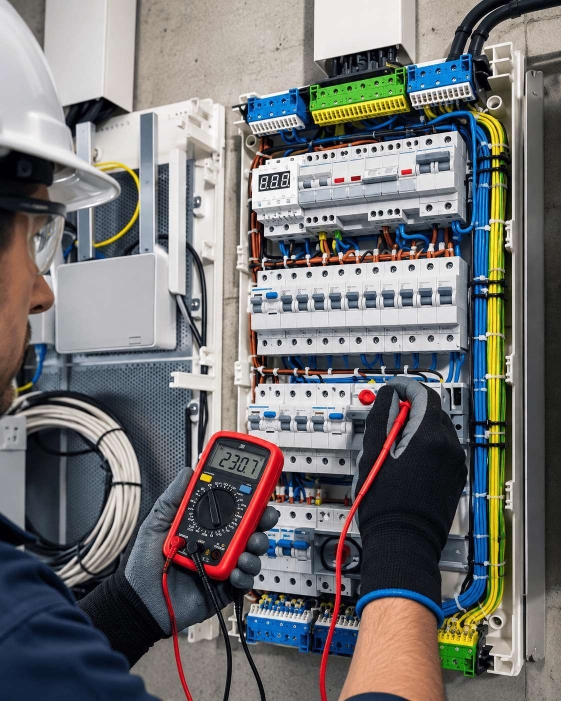

Soporte
Soporte técnico especializado en controles, tableros y otros
Un mismo equipo técnico atiende tanto los radiocontroles DCH como los repuestos y tableros TECAS.
Solicitar soporte →
Soporte
Un mismo equipo técnico atiende tanto los radiocontroles DCH como los repuestos y tableros TECAS.
Solicitar soporte →